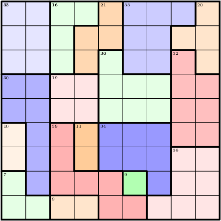

A SAT Attack on Killer Sudoku Problems
Killer Sudoku is a special class of sudoku where the sum of some adjacent cells is given. The goal is to fill in every cell with 1 to 9 and make sum equals to the sum as specified. This case study presents the first attempt using SAT solver for Killer Sudoku problems. This approach follows from that of classical sudokus. In addition, we generated the first opensource killer sudokus database.
The Solver, Encoding and Performance
This project employed PycoSAT as the SAT solver. By interacting with its Python API, it took less than one second to obtain a solution for any killer sudoku problem. Details about encoding is described in this short paper download and this report download.
A Killer Sudoku Database
We also provide a opensource database. There are 1000 example killer sudokus and their answers in the /data directory.
Authors
The project was developed by Robert (@airobert) and Aashish (@AashishV).